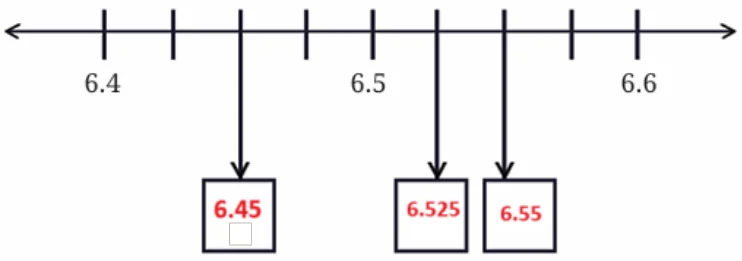
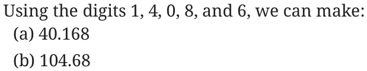
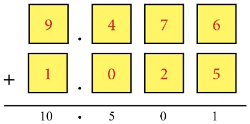

Page No. 78
Figure it out
1. Convert the following fractions into decimals:
(a) \(\frac{5}{100}\) (b) \(\frac{16}{1000}\) (c) \(\frac{12}{10}\) (d) \(\frac{254}{1000}\)
Ans:
(a) \(\frac{5}{100} = 0.05\) (b) \(\frac{16}{1000} = 0.016\) (c) \(\frac{12}{10} = 1.2\) (d) \(\frac{254}{1000} = 0.254\)
Page No. 79
2. Convert the following decimals into a sum of tenths, hundredths and thousandths:
(a) 0.34 (b) 1.02 (c) 0.8 (d) 0.362
Ans:
(a) \(\frac{3}{10} + \frac{4}{100}\) (b) \(\frac{100}{100} + \frac{2}{100} = 1 + \frac{2}{100}\)
(c) \(\frac{8}{10}\) (d) \(\frac{3}{10} + \frac{6}{100} + \frac{2}{1000}\)
3. What decimal number does each letter represent in the number line below?
Ans:

4. Arrange the following quantities in descending order:
(a) 11.01, 1.011, 1.101, 11.10, 1.01
\(\to\) Descending order: 11.10, 11.01, 1.101, 1.011, 1.01.
(b) 2.567, 2.675, 2.768, 2.499, 2.698
\(\to\) Descending order: 2.768, 2.698, 2.675, 2.567, 2.499.
(c) 4.678 g, 4.595 g, 4.600 g, 4.656 g, 4.666 g
\(\to\) Descending order: 4.678, 4.666, 4.656, 4.600, 4.595.
(d) 33.13 m, 33.31 m, 33.133 m, 33.331 m, 33.313 m
\(\to\) Descending order: 33.331, 33.313, 33.31, 33.133, 33.13.
5. Using the digits 1, 4, 0, 8, and 6 make: (a) the decimal number closest to 30 (b) the smallest possible decimal number between 100 and 1000.
Ans:

6. Will a decimal number with more digits be greater than a decimal number with fewer digits?
Ans: No. It is not necessary. For example, 2.05 (2 digits after decimal) vs 2.5 (1 digit after decimal). \(2.5 > 2.05\)
7. Mahi purchases 0.25 kg of beans, 0.3 kg of carrots, 0.5 kg of potatoes, 0.2 kg of capsicums, and 0.05 kg of ginger. Calculate the total weight of the items she bought.
Ans: 1.3 kg
8. Pinto supplies 3.79 L, 4.2 L, and 4.25 L of milk to a milk dairy in the first three days. In 6 days, he supplies 25 liters of milk. Find the total quantity of milk supplied to the dairy in the last three days.
Ans: 12.76 L
9. Tinku weighed 35.75 kg in January and 34.50 kg in February. Has he gained or lost weight? How much is the change?
Ans: He has lost weight. The change in the weight \(= 1.25\) kg
10. Extend the pattern: 5.5, 6.4, 6.39, 7.29, 7.28, 8.18, 8.17, \(\underline{\qquad}\), \(\underline{\qquad}\)
Ans: 9.07, 9.06
11. How many millimeters make 1 kilometer?
Ans: 1000000 mm
12. Indian Railways offers optional travel insurance for passengers who book e-tickets. It costs 45 paise per passenger. If 1 lakh people opt for insurance in a day, what is the total insurance fee paid?
Ans: The total insurance fee paid for 1 lakh passengers is ₹45,000.
13. Which is greater?
(a) \(\frac{10}{1000}\) or \(\frac{1}{10}\)?
(b) One-hundredth or 90 thousandths?
(c) One-thousandth or 90 hundredths?
Ans:
(a) \(\frac{1}{10} > \frac{1}{100}\)
(b) 90 thousandths \(>\) One-hundredth
(c) 90 hundredths \(>\) One-thousandth
Page No. 80
14. Write the decimal forms of the quantities mentioned (an example is given):
(a) 87 ones, 5 tenths and 60 hundredths
(b) 12 tens and 12 tenths
(c) 10 tens, 10 ones, 10 tenths, and 10 hundredths
(d) 25 tens, 25 ones, 25 tenths, and 25 hundredths
Ans:
(a) 88.10 121.2
(b) 111.1 277.75
15. Using each digit \(0 - 9\) not more than once, fill the boxes below so that the sum is closest to 10.5:
Ans:

16. Write the following fractions in decimal form:
(a) \(\frac{1}{2}\) (b) \(\frac{3}{2}\) (c) \(\frac{1}{4}\)
(d) \(\frac{3}{4}\) (e) \(\frac{1}{5}\) (f) \(\frac{4}{5}\)
Ans:
(a) 0.5 (b) 1.5 (c) 0.25
(d) 0.75 (e) 0.2 (f) 0.8